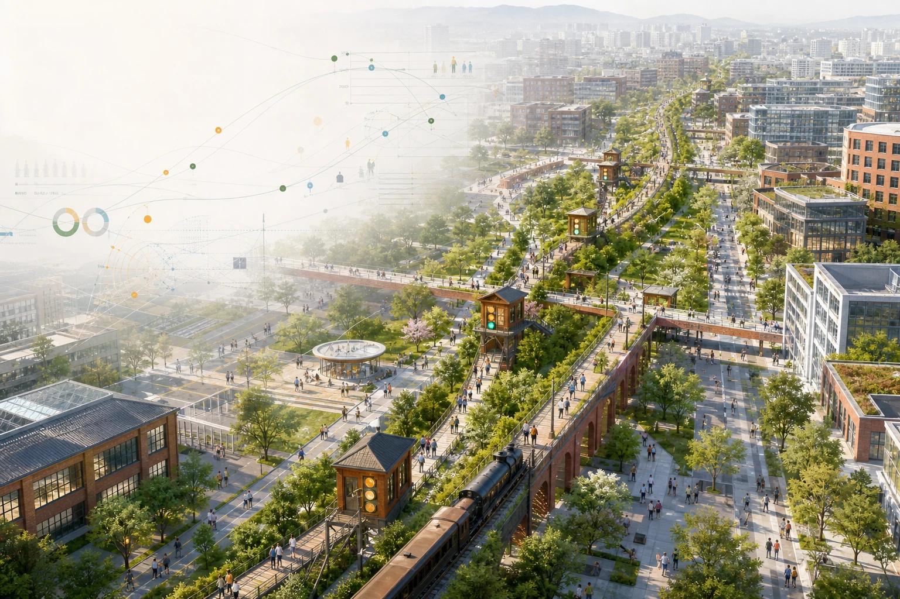
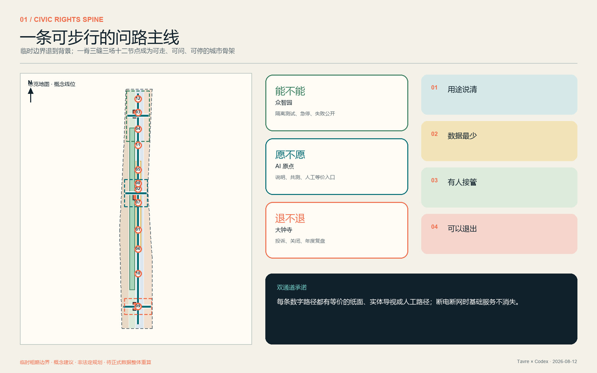
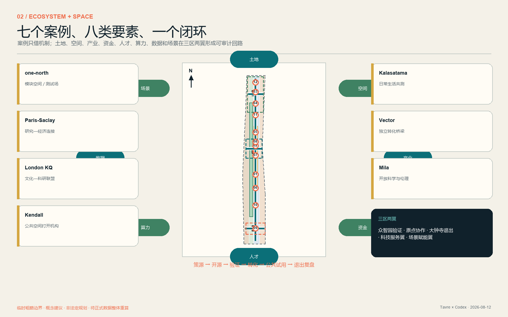
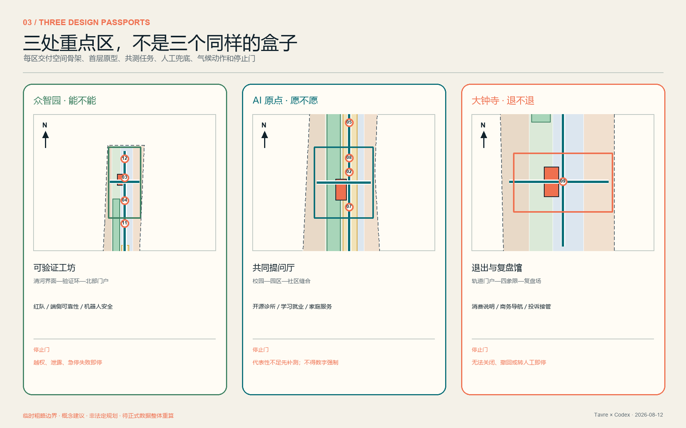
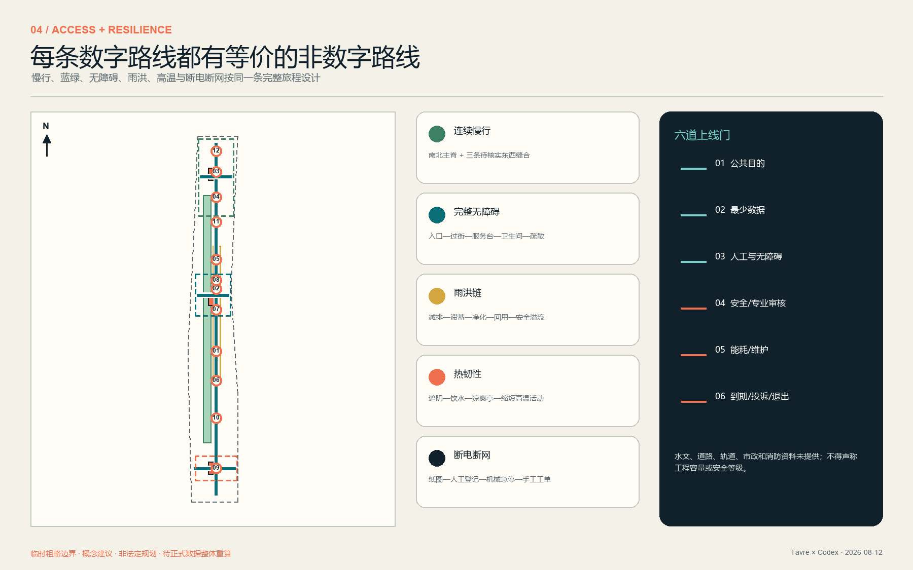
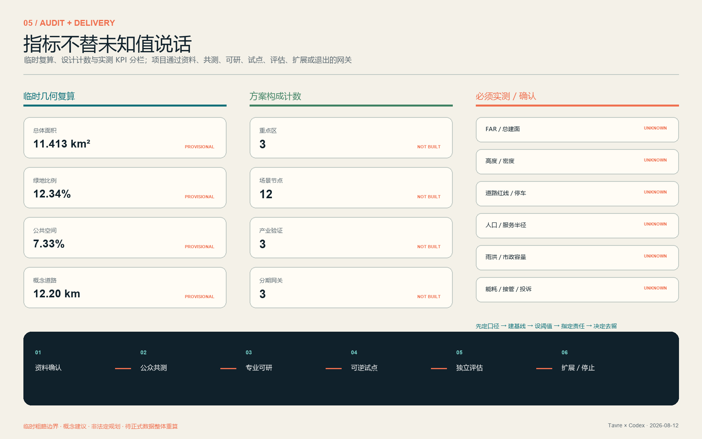

创新资源如何闭环
高校、科研、企业、资本/IP、社区与公共场景，通过策源—开源—验证—转化—共测—退出回流。
一条可步行的公共权利路径，串联三座市民共测场、十二个双通道服务节点与三区两翼创新生态。
概念建议：边界和重点区是临时粗略几何；不是 official redline、控规结论、工程方案或实施承诺。正式数据到位后须整体重算。

43.6 km² 研究协同、11.4 km² 总体骨架、368.4 ha 三片区护照各自回答不同问题；虚线临时边界退到背景，空间主角是一脊三缝三场十二节点。

高校、科研、企业、资本/IP、社区与公共场景，通过策源—开源—验证—转化—共测—退出回流。
南北主脊、三条东西缝合线、蓝绿韧性和人工服务节点组成城市骨架。
众智园问“能不能”，AI 原点问“愿不愿”，大钟寺问“退不退”。
案例只比较机制，不复制规模、政策或媒体；生态不以招商名单代替空间与责任。
模块空间与真实测试场 → 众智园共享验证底座。
研究—大学—经济连接 → 三区两翼连接人。
文化与科研跨界联盟 → 京张文化也是基础设施。
公共空间打开创新机构 → 可见首层与渐进实施。
日常生活与试用并行 → 社区共测与气候适应。
独立机构连接采用 → 独立复核与转化支持。
开放科学与社会伦理 → 开源工作坊与公众课堂。

每片区同时交付空间骨架、首层原型、共测任务、人工兜底和停止门；地标在设备关闭时仍是遮阴、休息与问路空间。

每张卡记录最少数据、限定角色、责任人、人工接管、留存到期、投诉退出与停止触发。AI 关闭时，基础服务仍然存在。
不做人脸识别；只用路线和所选语言。
纸图 + 人工指路匿名环境传感；极端天气切应急模式。
遮阴标识 + 饮水 + 巡查隔离测试；越权/泄露/不可复现即停。
专业测试员设备日志和主动反馈；电气/消防先审。
手动控制 + 现场人员最少环境感知，不留身份模板。
物理隔离 + 急停 + 安全员只处理用户主动提交的问题和代码。
开发者坐诊 + 纸面预约公开机会；差别待遇或虚构机会即停。
人工辅导 + 访客终端只解释公开规则；必须有更新责任人。
人工窗口 + 电话只用预约和容量，不建立家庭画像。
现场管理员 + 纸面登记不做操纵性画像；错误或诱导即停。
人工柜台 + 明码说明用户主动发起，位置用后到期。
人工伴行 + 触觉/语音分级工单；无法关闭服务即停。
线下窗口 + 纸质回执连续慢行和无障碍不是一个符号，而是从入口、过街、服务台、卫生间、休息到疏散的完整旅程；雨洪、热环境、断电断网均有降级路线。

先资料、再走查；先可逆、再评估。项目写清责任角色、第一份证据、维护与停止条件，绝不把时间表当作既定政府安排。
正式数据替换、南北主脊试点、三条东西断点审计。
可验证工坊、共同提问厅、退出与复盘馆。
双通道组件、凉爽/雨洪节点、年度问路周与公共账本。

来源可追溯、假设可替换、矩阵不再同构；四门校验通过不等于方案获批，只证明提交包内部可复核。
公告、任务书、专业标准、临时边界和七个案例在 sources.json 记录发布者、链接/路径、日期、许可、可用与禁用范围。页面离线，无 CDN、远程字体、地图瓦片、跟踪或外部脚本。
总体/重点区边界、控规、权属、现状建筑、道路轨道、市政能源、文保水文、公众基线、无障碍共测、运营主体与预算均有替换触发；不伪造 constraint geometry。
公告 23 条、Agent 六项任务、九项标准背景与十五项设计深度分别映射到真正相关的正文、图层、指标、图纸、来源和假设。
最终提交前须重新执行： deterministic validation · spatial review · visual packaging · professional evidence · participant preflight。